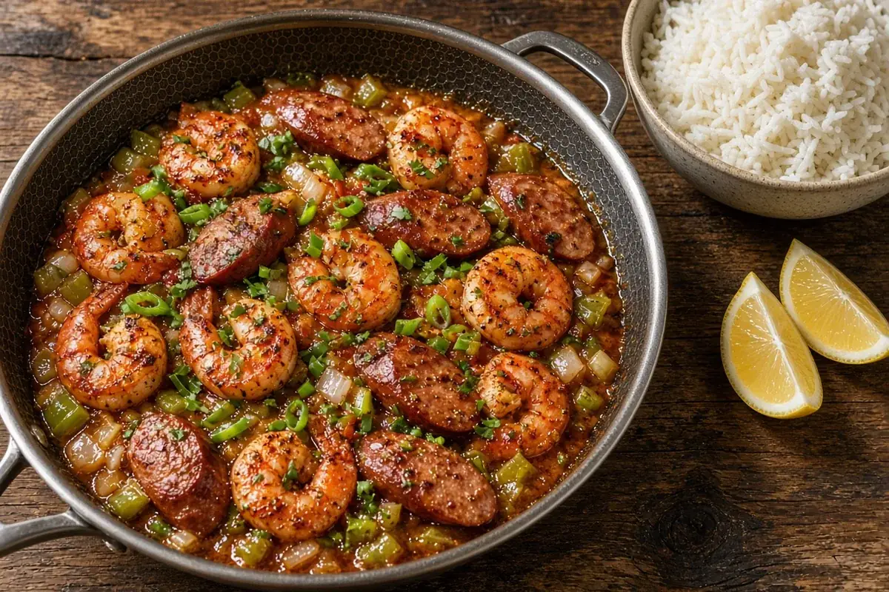

Cajun Shrimp Skillet over Rice
Plump shrimp seared in butter with optional andouille and the Cajun trinity, finished in a garlicky bone-broth pan sauce and spooned over fluffy white rice. A Monday-night skillet dinner in about 35 minutes.

4 servings
By
Yield: 4 servings
Prep:
Cook:
Total:
Difficulty: Easy
Ingredients
- 2 lb frozen raw large shrimp, peeled and deveined, thawed
- 1 1/2 cups long-grain white rice
- 2 1/4 cups chicken bone broth, for the rice
- 1 tsp kosher salt, divided
- 12 oz andouille sausage, sliced into coins (optional)
- 4 Tbsp butter, divided
- 1 Tbsp beef tallow or bacon fat
- 1 medium onion, diced
- 1 green bell pepper, diced
- 2 celery stalks, diced
- 5 garlic cloves, minced
- 2 Tbsp Cajun seasoning, divided
- 1 Tbsp tomato paste
- 1 cup chicken bone broth, for the sauce
- 1/2 cup heavy cream
- 1 tsp Worcestershire sauce
- 1 lemon, half juiced and half cut into wedges
- 4 green onions, sliced
- 2 Tbsp fresh parsley, chopped
Instructions
- Thaw the frozen shrimp in a colander under cold running water, 10 minutes, then pat dry and toss with 1 Tbsp of the Cajun seasoning.
- Meanwhile, bring the rice, the 2 1/4 cups chicken bone broth for the rice, 1 Tbsp of the butter, and 1/2 tsp of the salt to a boil in a covered saucepan, 5 minutes. Reduce to low and cook covered 15 minutes, then rest off heat 5 minutes.
- While the rice cooks, heat the tallow in a 12-inch HexClad skillet over medium-high heat, 2 minutes. Brown the andouille, 4 minutes, then move it to a plate. Skip this if you are leaving the sausage out.
- Sear the shrimp in the same skillet in a single layer, 1 1/2 minutes per side, until just pink. Move them to the plate with the andouille.
- Add 1 Tbsp of the butter, the onion, bell pepper, celery, and remaining 1/2 tsp salt to the skillet and cook, scraping up the browned bits, until soft, 6 minutes.
- Stir in the garlic, tomato paste, and remaining 1 Tbsp Cajun seasoning and cook until fragrant, 1 minute.
- Pour in the 1 cup chicken bone broth for the sauce, the heavy cream, and the Worcestershire sauce. Simmer until the sauce lightly coats a spoon, 4 minutes.
- Turn the heat to low, swirl in the remaining 2 Tbsp butter and the lemon juice, then return the shrimp and andouille and warm through, 2 minutes.
- Fluff the rice, spoon the shrimp and sauce over it, and top with the green onions and parsley. Serve with the lemon wedges, 1 minute.
Notes: Sam's Club frozen raw shrimp (21-25 count) work great; thaw them in the fridge overnight to skip step 1. Four servings for Brandon and Linda leaves a little extra for lunch. Leftovers reheat gently in the skillet with a splash of broth, 5 minutes; do not freeze the cooked shrimp.